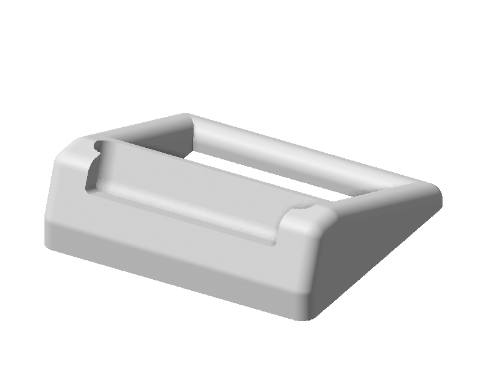
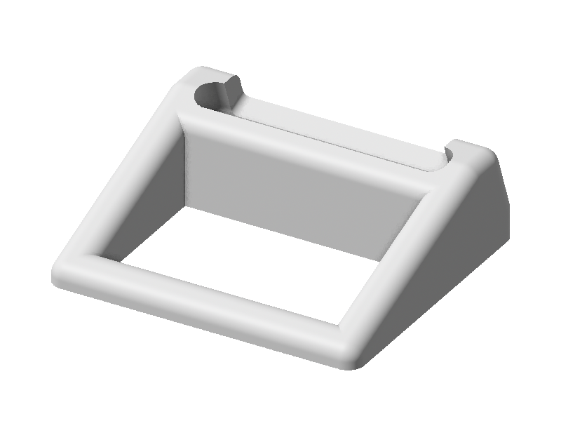
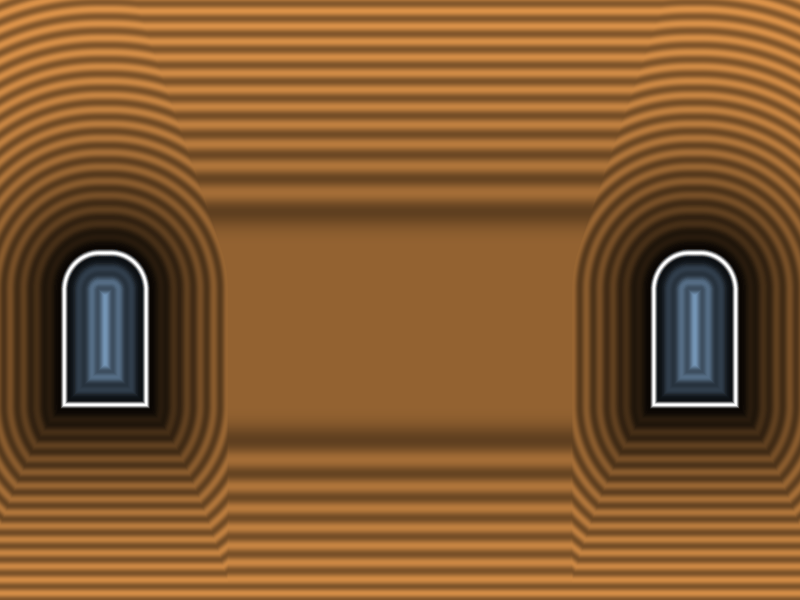

phone-stand
Drafted with AI, not yet reviewed
by Reiorganisation/phone-stand.scad
Phone stand: a tilted prism with a pocket under it and a slot for the phone, every edge rounded.
Ported from src/organisation/phone-stand.scad. Differences:
- The original’s minkowski of the base with a sphere is exact here: the base is cut into the prisms it is made of (the two side walls and the two pieces of the middle the pocket leaves), and each is its profile grown by ROUNDING, extruded with its rims rounded by the same. Their union is the minkowski sum.
- The phone’s rounded boxes are cuboids with round edges, not minkowskis.
- The original’s
enroundenswitch and its unrounded variant are gone. - The spheres are round where the original’s $fn = 72 and 36 make polygons.
Compared with the original: within 0.051 mm.



Files
Source
// SPDX-License-Identifier: 0BSD // // Phone stand: a tilted prism with a pocket under it and a slot for the // phone, every edge rounded. // // Ported from `src/organisation/phone-stand.scad`. Differences: // - The original's minkowski of the base with a sphere is exact here: the // base is cut into the prisms it is made of (the two side walls and the // two pieces of the middle the pocket leaves), and each is its profile // grown by ROUNDING, extruded with its rims rounded by the same. Their // union is the minkowski sum. // - The phone's rounded boxes are cuboids with round edges, not minkowskis. // - The original's `enrounden` switch and its unrounded variant are gone. // - The spheres are round where the original's $fn = 72 and 36 make // polygons. // // Compared with the original: within 0.051 mm. import "keycap/points" as points; // --- Parameters --- const PHONE = [75.7, 8.9, 165.0]; const PHONE_TILT = 20.0; const PHONE_LIFT = 15.0; const PHONE_ROUNDING = 5.0; const SCREEN_ROUNDING = 2.0; const SCREEN_MARGIN = 4.0; const BASE_THICKNESS = 10.0; const BASE_ROUNDING = 5.0; // --- Base --- const WIDTH = PHONE[0] + BASE_THICKNESS * 2 - BASE_ROUNDING * 2; const DEPTH = sind(PHONE_TILT) * PHONE[2] + BASE_THICKNESS * 2; const HEIGHT = PHONE_LIFT + BASE_THICKNESS; // The pocket under the base, along the width, before the rounding const POCKET_WIDTH = WIDTH - BASE_THICKNESS / 3; const POCKET_DEPTH = (DEPTH - BASE_THICKNESS) / 2 + BASE_THICKNESS * 2; const POCKET_BACK = DEPTH - BASE_THICKNESS - BASE_THICKNESS / 6; // A rectangle's corners, centered fn rect_points(center, size) { [[-1, -1], [1, -1], [1, 1], [-1, 1]].map(|corner| [ center[0] + corner[0] * size[0] / 2, center[1] + corner[1] * size[1] / 2, ]) } // The base's side: the square the phone's tilt cuts, less the slot behind // it. The original's X runs away from the phone; here it is Y, mirrored. fn profile() { let t = global::BASE_THICKNESS; let h = global::HEIGHT; let d = global::DEPTH; let tilt = global::PHONE_TILT; let block = points::intersection( rect_points([t - d / 2, h / 2], [d, h]), points::rotate(rect_points([0.0, 0.0], [d * 2, h * 2]), tilt), ); let slot = points::rotate(rect_points([t * 7 / 4, h / 2], [t, h * 2]), tilt); points::mirror(points::difference(block, slot), "x") } // The profile cut to a range of Y fn profile_between(y0, y1) { let big = global::DEPTH * 4; points::intersection(profile(), rect_points([(y0 + y1) / 2, 0.0], [y1 - y0, big])) } // A prism of `loops` (Y, Z) from x0 to x1, grown by `r` every way: the // minkowski sum of the prism with a sphere. fn grown(loops, x0, x1) { let r = global::BASE_ROUNDING; polygon(loops) .offset(r) .extrude([x0 - r, x1 + r], #{round: r}) .rotate_xyz([90, 0, 90]) } fn base() { let w = global::WIDTH / 2; let p = global::POCKET_WIDTH / 2; let front = global::POCKET_BACK - global::POCKET_DEPTH; let whole = profile(); union( grown(whole, p, w).symmetric_x(), grown(profile_between(-global::DEPTH, front), -p, p), grown(profile_between(global::POCKET_BACK, global::DEPTH), -p, p), ) } // --- Phone --- // The slot for the phone and its screen, standing at the stand's tilt fn phone() { let size = [global::PHONE[0] + 2, global::PHONE[1] + 2, global::PHONE[2] + 2]; let screen = [ global::PHONE[0] - global::SCREEN_MARGIN * 2, global::PHONE[1] + global::BASE_THICKNESS * 2, global::PHONE[2] - global::SCREEN_MARGIN, ]; union( cuboid(size, #{round: global::PHONE_ROUNDING}), cuboid(screen, #{round: global::SCREEN_ROUNDING}).move([0, -(screen[1] - global::SCREEN_ROUNDING * 2) / 2, 0]), ) .move([0, 0, global::PHONE[2] / 2]) .rotate_xyz([-global::PHONE_TILT, 0, 0]) .move([0, 0, global::PHONE_LIFT]) } // --- Output --- draw(base().intersection(half_space([0, 0, 0], [0, 0, -1])).difference(phone()));